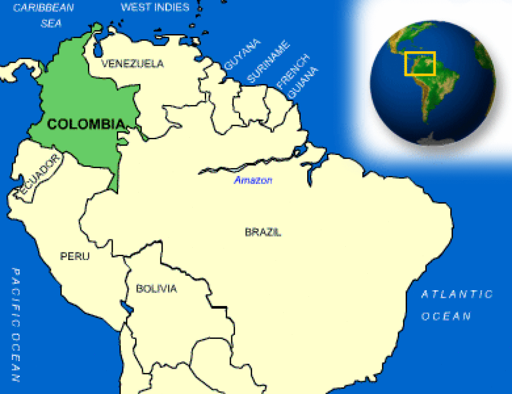

The Wayback Machine - https://web.archive.org/web/20231130213502/https://www.countryreports.org/country/colombia.htm
Where is Colombia located?
What countries border Colombia?

Colombia Weather
What is the current weather in Colombia?
Colombia Facts and Culture
What is Colombia famous for?
- Cultural Attributes: Colombia's various regions and climate add to its culture by influencing the food, music and dance. Colombians are also known... More
- Family: Family unity and support is highly valued in Colombia. Family members share their good fortune with other members of the... More
- Personal Apperance: Dress is both conservative and fashionable in Colombia. In larger cities, men wear suits and ties. Women wear... More
- Recreation: Soccer is the most popular sport in Colombia. Many Colombian children play the game. Watching professional soccer is also a... More
- Diet: Breakfast foods vary from region to region. They include juice, coffee, hot chocolate, fruit eggs, bread or changua (potato and... More
- Food and Recipes: If one is offered more food, it is polite to refuse if it may be considered overindulging. It is considered... More
- Visiting: People often sit on their verandas, and chat with people that pass by. Friends and relatives visit without notice, especially... More
- Dating: Dating begins around 14 or 15 years of age, depending on family custom and region. Going to movies, restaurants, and... More
Colombia Facts
What is the capital of Colombia?
| Capital | Bogota |
| Government Type | presidential republic |
| Currency | Colombian pesos (COP) |
| Total Area |
439,733 Square Miles 1,138,910 Square Kilometers |
| Location | Northern South America, bordering the Caribbean Sea, between Panama and Venezuela, and bordering the North Pacific Ocean, between Ecuador and Panama |
| Language | Spanish (official) |
| GDP - real growth rate | 2.2% |
| GDP - per capita (PPP) | $14,200.00 (USD) |
Colombia Demographics
What is the population of Colombia?
| Ethnic Groups | mestizo 58%, white 20%, mulatto 14%, black 4%, mixed black-Amerindian 3%, Amerindian 1% |
| Languages | Most Colombians speak Spanish, which is the official language. Among eighty indigenous groups at least forty languages are spoken. |
| Nationality Adjective | Colombian |
| Nationality Noun | Colombian(s) |
| Population | 49,084,841 |
| Population Growth Rate | 1.1% |
| Population in Major Urban Areas | BOGOTA (capital) 8.743 million; Medellin 3.694 million; Cali 2.453 million; Barranquilla 1.9 million; Bucaramanga 1.12 million; Cartagena 988,000 |
| Predominant Language | Spanish (official) |
| Urban Population | 75.3% |
Colombia Government
What type of government does Colombia have?
- Executive Branch: chief of state: President Ivan DUQUE Marquez (since 7 August 2018); Vice President Marta Lucia RAMIREZ Blanco (since 7 August... More
- Suffrage: 18 years of age; universal More
- Citizenship: citizenship by birth: no citizenship by descent only: least one parent must be a citizen or permanent resident of Colombia dual citizenship... More
- National Holiday: Independence Day, 20 July (1810) More
- Constitution: several previous; latest promulgated 5 July 1991; amended many times, last in 2015 More
- Independence: 20 July 1810 (from Spain) More
Colombia Video
YouTube: World Travel Guide Colombia Travel Guide
Colombia Geography
What environmental issues does Colombia have?
- Overview: The Republic of Colombia (about 440,000 square miles), is in northwest South America. Its location on the Caribbean Sea and... More
- Climate: Colombia's climate varies with its different altitudes. Its three climatic zones are called: "hot country," "temperate country," and "cold country."... More
- Border Countries: Brazil 1,644 km, Ecuador 590 km, Panama 225 km, Peru 1,800 km, Venezuela 2,050 km More
- Environment - Current Issues: deforestation; soil and water quality damage from overuse of pesticides; air pollution, especially in Bogota, from vehicle emissions More
- Environment - International Agreements: party to: Antarctic Treaty, Biodiversity, Climate Change, Climate Change-Kyoto Protocol, Desertification, Endangered Species, Environmental Modification, Hazardous Wastes, Law of the... More
- Terrain: flat coastal lowlands, central highlands, high Andes Mountains, eastern lowland plains More
Colombia Economy
How big is the Colombia economy?
- Economic Overview: Colombia heavily depends on energy and mining exports, making it vulnerable to fluctuations in commodity prices. Colombia is Latin Americas... More
- Industries: textiles, food processing, oil, clothing and footwear, beverages, chemicals, cement; gold, coal, emeralds More
- Currency Name and Code: Colombian pesos (COP) More
- Export Partners: US 27.5%, Panama 7.2%, China 5.2%, Spain 4.4%, Ecuador 4% More
- Import Partners: US 28.8%, China 18.6%, Mexico 7.1%, Germany 4.2% More
Colombia News and Current Events
What current events are happening in Colombia?
Source: Google News
Colombia Travel Information
What makes Colombia a unique country to travel to?
Country Description
Colombia is a medium-income nation of 46 millionpersons. Its geography is very diverse, ranging from tropical coastal areas and rainforests to rugged mountainous terrain. Tourist facilities in Colombia vary in quality and safety, according to price and location. Based on Colombian statistics, an estimated 60,000 U.S. citizens reside in Colombia and 280,000 U.S. citizens travel, study and do business in Colombia each year.
Crime
Violent and petty crime remains a significant concern in Colombia. Robbery and other violent crimes, as well as scams against unsuspecting tourists, are common in urban areas. Generally speaking, if you are the victim of a robbery, you should not resist. Firearms are prevalent in Colombia and altercations can turn violent. Small towns and rural areas of Colombia can still be extremely dangerous due to the presence ofof illegal armed groups and narcotics trafficking gangs. Theft also remains a significant problem in many urban and rural areas. There has been an increase in petty crime, including a significant increase in pick pocketing of passports in the El Dorado Airport in Bogota, Colombia, and at luxury hotels, especially during Colombian holidays, Christmas, Easter Week, and summer holidays (July and August).Some of the most common methods used by criminals in Colombia are noted below:
ATMs: People are sometimes robbed after using automatic teller machines (ATMs) on the street. In some cases, robbers use motorcycles to approach their victims and then flee the scene. For your safety, only use ATMs inside shopping malls or other protected locations. Driving to and from the location rather than walking provides added protection. When using an ATM, you should be on the lookout for anyone watching or following you and be extremely cautious about displaying cash.
Taxis: Robbery of taxi passengers is a serious problem in Bogota, as well as in Cali and Medellin. Typically, the driver who may be one of the conspirators will pick up the passenger and then stop to pick up one or more armed cohorts, who enter the cab, overpower the passenger, and take his/her belongings. If the passenger has an ATM card, the perpetrators may force the passenger to withdraw money from various ATM locations. Such ordeals can last for hours.
In most taxi-related crimes, the victims have been riding alone and have hailed taxis off the street. Rather than hailing a taxi, you should use the telephone dispatch service that most taxi companies offer. Many hotels, restaurants, and stores will call a taxi for you. When a taxi is dispatched by telephone, the dispatcher creates a record of the call and the responding taxi. The taxi company provides the caller with the license plate numbers and a security code to present to the taxi driver before departing.
When taking a taxi, note of the license plate, company and other ID for the car and driver. Also, the Colombian Tourist Police recommend checking to make sure that your taxi has inside handles and latches before committing to the ride.
Airports: U.S. citizens arriving at major Colombian airports have occasionally been victimized by armed robbers and rogue taxi drivers while en route from the airport to their hotel or home. There are taxi booths both in El Dorado (international) and Puente Aereo (domestic) airports. You may go to the booth, request a taxi, and provide the address of your destination. The person in the booth will give you a ticket indicating the amount of money you will pay for the service. Dispatchers are right outside the exit to organize the waiting line. Authorized taxis are located in the designated area, close to the booth. Give one part of your ticket to the driver and retain one for your records.
Criminals also sometimes identify potential victims at the airport and then follow their vehicles before robbing the occupants at a stoplight. Remain vigilant at airports and inform the local airport police if you suspect you may be under surveillance.
Hiking Trails: Several U.S. citizens have been robbed in recent years while hiking on nature trails in and around Bogota. Hike in groups for safety, especially in isolated areas.
Hostels: The Tourist Police in Bogota specifically caution about crimes in backpacker hostels in the Candelaria area of Bogota, noting many attacks in recent years, including a sexual assault of a U.S. citizen. Be careful when selecting a hostel- consider not just the price, but the general safety of the area.
Disabling Drugs: The Embassy continues to receive reports of criminals in Colombia using disabling drugs to temporarily incapacitate unsuspecting victims. Perpetrators may offer tainted drinks, cigarettes or gum at bars, restaurants, and other public areas, especially those that cater to sexual tourism. Typically, victims become disoriented or unconscious, and are thus vulnerable to robbery, sexual assault and other crimes. Avoid leaving food or drinks unattended at a bar or restaurant, and be suspicious if a stranger offers you something to eat or drink.
Counterfeit Money: U.S. citizens in Colombia routinely fall victim to a scam in which purported undercover police officers approach them on the street and request to examine their money, supposedly to determine if it is counterfeit. The officers, who are in fact criminals, then flee with the money. In a variation of this scam, the thieves may ask to see your jewelry. Legitimate Colombian police officers do not make such requests. Colombian police officers will always be in uniform. If someone claims to be working undercover (out of uniform), they are not legitimate since undercover police are not authorized to intercept tourists on the street.
Dont buy counterfeit and pirated goods, even if they are widely available. Not only are the bootlegs illegal in the United States, if you purchase them you may also be breaking local law.
Criminal Penalties
While traveling in Colombia, all persons including U.S. citizens are subject to its laws and jurisdictions. Foreign laws and legal systems can be vastly different than our own. In some places driving under the influence could land you immediately in jail. These criminal penalties will vary from country to country. There are also some things that might be legal in the country you visit, but still illegal in the United States. The purchase of pirated goods may lead to prosecution under U.S. law. Engaging in sexual conduct with children or using or disseminating child pornography in a foreign country is a crime prosecutable in the United States. If you break local laws in Colombia, your U.S. passport will not help you avoid arrest or prosecution. Its very important to know what is legal and what is illegal in the countries you visit.If you are arrested, the U.S. government cannot request your release. Colombia and the United States do not have a prisoner transfer agreement, and so any sentence for a crime committed in Colombia is ordinarily served in a Colombian prison.
Penalties for possession, use, or trafficking of illegal drugs in Colombia are severe, and convicted offenders can expect long prison sentences under harsh conditions, with significant expense and great hardship for themselves and their families. Colombian police make multiple arrests daily for drug trafficking at major airports, and have sophisticated means for detecting illegal drugs in baggage or on your person. Travelers are sometimes requested to undergo an X-ray to ensure that they are not smuggling narcotics within their bodies. There are currently more than 40 U.S. citizens incarcerated in Colombia for attempting to smuggle drugs out of the country.
The hardships resulting from imprisonment do not end even after release from prison: Colombian law requires that serious offenders remain in the country to serve a lengthy period of parole, during which the offender is given no housing and may lack permission to work. As a result, family members must often support the offender, sometimes for more than a year, until the parole period expires.
Arrest Notification: Based on the Vienna Convention on Consular Relations, bilateral agreements with certain countries, and customary international law, if you are arrested in Colombia, you have the option to request that the police, prison officials, or other authorities alert the U.S. Embassy in Bogota.
Languages
Most Colombians speak Spanish, which is the official language. Among eighty indigenous groups at least forty languages are spoken.
Medical Facilities and Health Information
Medical care is adequate in major cities but varies greatly in quality and accessibility elsewhere. Emergency rooms in Colombia, even at top-quality facilities, are frequently overcrowded and ambulance service can be slow. Many private health care providers in Colombia require that patients pay for care before treatment, even in an emergency. Some providers in major cities may accept credit cards, but those that dont may request advance payment in cash. Uninsured travelers without financial resources may be relegated to seeking treatment in public hospitals where the standard of care is below U.S. standards.Elective Surgery: The Department of State regularly receives reports of U.S. citizens who have died or suffered complications from liposuction and other elective surgeries overseas. Before undergoing such a procedure in Colombia, consult with your personal physician, research the credentials of the provider in Colombia, and carefully consider your ability to access emergency medical care if complications arise. It is important to confirm that your medical insurance provides coverage in Colombia, including treatment of complications from elective procedures or medical evacuation if necessary. If you suffer complications as a result of medical malpractice, collecting damages from your surgeon may be difficult.
Unregulated Drugs: Colombia has seen a recent increase in the use of unregulated drugs that purport to enhance sexual performance. Some tourists have died after using these substances, which come in liquid, powder, or tablet form. You are urged to seek guidance from a physician before ingesting such substances in Colombia.
Altitude Sickness: Travelers to the capital city of Bogota may need time to adjust to the altitude of 8,600 feet, which can affect blood pressure, digestion, and energy level, and cause mild dyspnea with exercise, headaches, sleeplessness, and other discomfort. Drink plenty of fluids to maintain hydration, and avoid strenuous exercise until you have acclimated to the altitude. If you have circulatory or respiratory problems, consult a physician before traveling to Bogota or other high-altitude locations.
Safety and Security
Security in Colombia has improved significantly in recent years, including in tourist and business travel destinations such as Cartagena and Bogota, but violence linked to narco-trafficking continues to affect some rural areas and parts of large cities.
Traffic Safety and Road Conditions
While in Colombia, you may encounter road conditions that differ significantly from those in the United States. Due to the security environment in Colombia, U.S. government officials and their families are not permitted to travel by road between most major cities. They also cannot use inter- or intra-city bus transportation, or travel by road outside urban areas at night. You are encouraged to follow these same precautions.Traffic laws in Colombia, including speed limits, are often ignored and rarely enforced, creating dangerous conditions for drivers and pedestrians in major cities. Under Colombian law, seat belts are mandatory for front-seat passengers in a private vehicle. Car seats are mandatory for children, and a child under ten is not permitted to ride in a front seat. It is against the law to talk on a cellular phone while driving in Colombia, and violators may be fined. While driving outside major cities, you must drive with your lights on.
If you are involved in an accident, you MUST remain at the scene without moving your vehicle until the authorities arrive; this rule is strictly enforced, and moving a vehicle or leaving the scene of an accident may constitute an admission of guilt under Colombian law.
If you want to import your own vehicle into Colombia, consult with the nearest Colombian consulate for information on Colombian taxes and licensing rules, which can be complicated and bureaucratic.